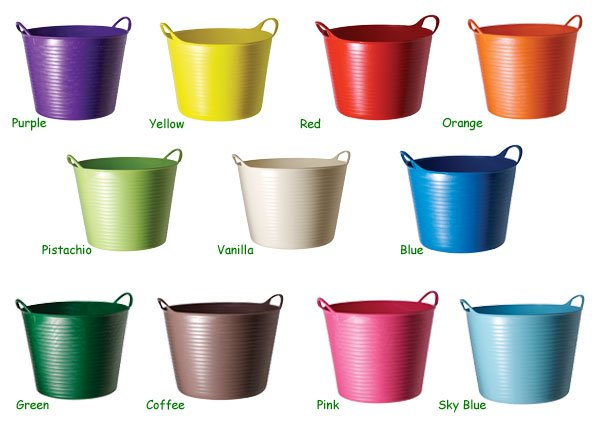
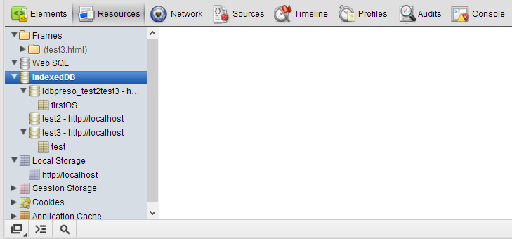

IndexedDB
A Place For Your Stuff
Who am I?
- Developer Evangelist for Adobe
- Web Standards, HTML5, JavaScript, ColdFusion
- Blogging at www.raymondcamden.com

Game Plan
- What is it?
- Where can I use it?
- How can I use it?
What is it?
IndexedDB is an API for client-side storage of significant amounts of structured data and for high performance searches on this data using indexes.
Credit: Mozilla Developer Network.
What about...
- Cookies?
- LocalStorage?
- WebSQL?
How much data?
- For Firefox, there is no limit on the database, just a prompt for a large object
- For Chrome, user is prompted (iffy)
How much data?
Expect to be able to save a reasonable amount of data, but also expect the user to know you are storing this data.
Why store data?
Every HTTP request means more data going over the pipe. If you can send it once, why not?
A Draft Specification
- Prefixes in the wild
- Offical spec: http://www.w3.org/TR/IndexedDB/
- Expect changes
It's a different way to think about data
Image credit: longlong240
Know SQL?
Less Precise/Rigid
Where can I use this?
Image credit: Parclytaxel
Image credit: Joe Buckingham
Thought credit: Christian Heilmann
Chrome Dev Tools
How Can I Use It?
Step One: Check for support
document.addEventListener("DOMContentLoaded", function(){
if("indexedDB" in window) {
console.log("YES!!! I CAN DO IT!!! WOOT!!!");
} else {
console.log("I has a sad.");
}
},false);
Demo
test1.html
Step Two: Open the Database
var openRequest = indexedDB.open("test",1);
Results (actually events)
- Success!
- Error :(
- Upgrade needed
- Blocked!
What should happen...
- First time run? "Upgrade Needed" event
- Success gives you a handle to the database
var openRequest = indexedDB.open("test",1);
var db;
openRequest.onupgradeneeded = function(e) {
console.log("running onupgradeneeded");
}
openRequest.onsuccess = function(e) {
console.log("running onsuccess");
db = e.target.result;
}
Demo
test2.html
Object Stores
- Think of it like a table - your data goes here
- Defines a "key" (a bit more complex than a PK)
- Defines indexes (which can help with constraints)
- Can only be done during a "upgradeneeded" event
Pseudo-code
request to open the database
If the request fired an upgrade needed event, create object stores
If the request fired a done event, I'm ready to roll
Making an Object Store
- First, see if it exists:
databaseVariable.objectStoreNames - If not, run
databaseVariable.createObjectStore("name", options)
Demo
test3.html
Recap
- We have a way to open and get a handle to our database
- We have a place to store stuff (objectStore)
Now let's add some crap!
Adding Data
- Must be done in a transaction
- Transactions are specific to a store (or stores) and specify readonly or readwrite
- It is asynchronous
- The call is just objecstore.add(ANYTHING)
Demo
test4.html
What broke?
- Every object needs a key
- You can't add a key that already exists
- (In case you are wondering, yes, there is a way to do updates)
Types of Keys
- No key - you specify
- Keypath (ie, a column name), you make it unique
- Keypath and a key generator (browser handles it for you)
- No key, but a key generator (best option)
Examples
thisDb.createObjectStore("test", { keyPath: "email" });
thisDb.createObjectStore("test2", { autoIncrement: true });
Demo
test5.html
Getting (one piece of) Data
- Again, in a transaction
- Again, asynchronous
- By key
Example
var transaction = db.transaction(["test"], "readonly");
var objectStore = transaction.objectStore("test");
var ob = objectStore.get(x);
ob.onsuccess = function(e) {
}
Example
db.transaction(["test"], "readonly").objectStore("test").get(X).onsuccess = function(e) {
}
Demo
test6.html
Getting (more than one piece of) Data
- Cursor - provides a way to iterate over data
- Can include a range and a direction
Example
var transaction = db.transaction(["test"], "readonly");
var objectStore = transaction.objectStore("test");
var cursor = objectStore.openCursor();
cursor.onsuccess = function(e) {
var res = e.target.result;
if(res) {
//stuff
res.continue();
}
}
Demo
test7.html
Recap
- You can make an object store
- You can add data to it (and have keys autogenerated like unicorn magic)
- You can get by primary key
- You can get by all...
Working with Indexes
- An index tells IndexedDB, I want to get crap by this property later
- It also allows us to set a property as being unique
- Done at object store creation time (which means upgrade needed time as well)
Demo
var objectStore = thisDb.createObjectStore("test",
{ autoIncrement:true });
//first arg is name of index, second is the path (col);
objectStore.createIndex("name","name", {unique:false});
objectStore.createIndex("email","email", {unique:true});
Demo
test8.html
Ranges
-
Allow you to grab a subset of data
- Up to X
- X and higher
- Between X and Y
- For all of the above, inclusive and non-exclusive
- Numeric and string based range
- Can be in any direction as well
//Taken from MDN
// Match anything past "Bill", including "Bill"
var lowerBoundKeyRange = IDBKeyRange.lowerBound("Bill");
// Match anything past "Bill", but don't include "Bill"
var lowerBoundOpenKeyRange = IDBKeyRange.lowerBound("Bill", true);
// Match anything up to, but not including, "Donna"
var upperBoundOpenKeyRange = IDBKeyRange.upperBound("Donna", true);
//Match anything between "Bill" and "Donna", but not including "Donna"
var boundKeyRange = IDBKeyRange.bound("Bill", "Donna", false, true);
Demo
test9.html
FYI - Reverse Range/Unique
objectStore.openCursor(range, IDBCursor.PREV);
objectStore.openCursor(range, IDBCursor.PREV_NO_DUPLICATE);
Full Demo
- Demonstrates put and delete
- Demonstrates count() feature
- Demonstrates 'search' (hack)
Complex Data
- You can store deeply nested, complex objects
- You can store binary data as well
Example of a complex object
var person = {name:"Raymond", email:"foo@foo.com",
tags:["ajax","mashup","html5","jquery","cats"]};
Demo
test10.html